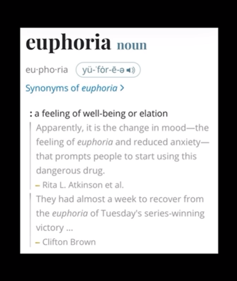

Artist: Kendrick Lamar
Eurt si em tuoba yas yeht gnihtyrevE
Euphoria
Them superpowers getting neutralized, I can only watch in silence
The famous actor we once knew is lookin' paranoid and now spiralin'
You're movin' just like a degenerate, every antic is feelin' distasteful
I calculate you're not as calculated, I can even predict your angle
Fabricating stories on the family front 'cause you heard Mr. Morale
A pathetic master manipulator, I can smell the tales on you now
You're not a rap artist, you a scam artist with the hopes of being accepted
Tommy Hilfiger stood out, but FUBU never had been your collection
I make music that electrify 'em, you make music that pacify 'em
I can double down on that line, but spare you this time, that's random acts of kindness
Know you a master manipulator and habitual liar too
But don't tell no lie about me and I won't tell truths 'bout you
Shoo, shoo, shoo
Shoo, shoo, shoo
Bee, bee, bee, bee, bee, bee
Yeah, I'm out the way, yeah, I'm low, okay
Yeah, the island right here's remote, okay
I ain't thinkin' about no reaper
Nigga, I'm reapin' what I sow, okay
Got a Benjamin and a Jackson all in my house like I'm Joe, okay
Hellcat, made his homeboys and them type sell they soul, okay
Everybody wanna be demon 'til they get chipped by your throwaway
And I might do a show a day, once a lame, always a lame
Oh, you thought the money, the power or fame would make you go away?
Have you ever played have-you-ever? Okay, nigga, let's play
Have you ever walked your enemy down like with a poker face?
Have you ever paid five hundred thou' like to an open case?
Well, I have, and I failed at both, but I came out straight
I hate when a rapper talk about guns, then somebody die
They turn into nuns, then hop online, like "Pray for my city"
He fakin' for likes and digital hugs
His daddy a killer, he wanna be junior, they must've forgot the shit that they done
Dementia must run in his family, but let it get shaky
I'll park his son
The very first time I shot me a Drac', the homie had told me to aim it this way
I didn't point down enough, today, I'll show you I learned from those mistakes
Somebody had told me that you got a ring, on God, I'm ready to double the wage
I'd rather do that than let a Canadian nigga make Pac turn in his grave
Cutthroat business, you got shit twisted
What is it? The braids?
I hurt your feelings? You don't wanna work with me no more? Okay
It's three G.O.A.T.s left, and I seen two of them kissin' and huggin' on stage
I love 'em to death, and in eight bars, I'll explain that phrase, huh
It's nothin' nobody can tell me, huh
I don't wanna talk on no celly, huh
You know I got language barriers, huh
It's no accent you can sell me, huh
Yeah, Cole and Aubrey know I'm a selfish nigga, the crown is heavy, huh
I pray they my real friends, if not, I'm YNW Melly
I don't like you poppin' shit at Pharrell, for him, I inherit the beef
Yeah, fuck all that pushin' P, let me see you push a T
You better off spinnin' again on him, you think about pushin' me
He's Terrence Thornton, I'm Terence Crawford, yeah, I'm whoopin' feet
We ain't gotta get personal, this a friendly fade, you should keep it that way
I know some shit about niggas that make Gunna Wunna look like a saint
This ain't been about critics, not about gimmicks, not about who the greatest
It's always been about love and hate, now let me say I'm the biggest hater
I hate the way that you walk, the way that you talk, I hate the way that you dress
I hate the way that you sneak diss, if I catch flight, it's gon' be direct
We hate the bitches you fuck, 'cause they confuse themself with real women
And notice, I said "we, " it's not just me, I'm what the culture feelin'
How many more fairytale stories 'bout your life 'til we had enough?
How many more Black features 'til you finally feel that you're Black enough?
I like Drake with the melodies, I don't like Drake when he act tough
You gon' make a nigga bring back Puff, let me see if Chubbs really crash somethin'
Yeah, my first one like my last one, it's a classic, you don't have one
Let your core audience stomach that, then tell 'em where you get your abs from
V12, it's a fast one, baow-baow-baow, last one
Headshot for the year, you better walk around like Daft Punk
Remember?
Ay, Top Dawg, who the fuck they think they playin' with?
Extortion my middle name as soon as you jump off of that plane, bitch
I'm allergic to the lame shit, only you like bein' famous
Yachty can't give you no swag neither, I don't give a fuck 'bout who you hang with
I hate the way that you walk, the way that you talk, I hate the way that you dress
Surprised you wanted that feature request
You know that we got some shit to address
I even hate when you say the word "nigga, " but that's just me, I guess
Some shit just cringeworthy, it ain't even gotta be deep, I guess
Still love when you see success, everything with me is blessed
Keep makin' me dance, wavin' my hand, and it won't be no threat
I'm knowin' they call you The Boy, but where is a man? 'Cause I ain't seen him yet
Matter fact, I ain't even bleed him yet, can I bleed him? Bet
When I see you stand by Sexyy Red, I believe you see two bad bitches
I believe you don't like women, it's real competition, you might pop ass with 'em
Let's speak on percentage, show me your splits, I'll make sure I double back with you
You were signed to a nigga that's signed to a nigga that said he was signed to that nigga
Try cease and desist on the "Like That" record?
Hoe, what? You ain't like that record?
"Back To Back, " I like that record
I'ma get back to that, for the record
Why would I call around tryna get dirt on niggas? Y'all think all my life is rap?
That's hoe shit, I got a son to raise, but I can see you don't know nothin' 'bout that
Wakin' him up, know nothin' 'bout that
And tell him to pray, know nothin' 'bout that
And givin' him tools to walk through life like day-by-day, know nothin' 'bout that
Teachin' him morals, integrity, discipline, listen, man, you don't know nothin' 'bout that
Speakin' the truth and consider what God's considerin', you don't know nothin' 'bout that
Ain't 20-v-1, it's 1-v-20 if I gotta smack niggas that write with you
Yeah, bring 'em out too, I'll clean 'em out too
Tell BEAM that he better stay right with you
Am I battlin' ghost or AI? Nigga feelin' like Joel Hale Osteen
Funny, he was in a film called "AI"
And my sixth sense tellin' me to off him
I'ma blick niggas all in they coffin
Yeah, OV-hoe niggas is dick riders
Tell 'em run to America, they imitate heritage, they can't imitate this violence
What I learned is niggas don't like the West Coast
And I'm fine with it, I'll push the line with it
Pick a nigga off one at a time with it
We can be on a three-hour time difference
Don't speak on the family, crodie
It can get deep in the family, crodie
Talk about me and my family, crodie?
Someone gon' bleed in your family, crodie
I be at New Ho King eatin' fried rice with a dip sauce and blammy, crodie
Tell me you're cheesin', fam
We can do this right now on the camera, crodie
Ay, fuck y'all niggas, I don't trust y'all niggas
I wave one finger and thump y'all niggas like, "Mm"
Field goal, punt y'all niggas, they punk y'all niggas, nobody never took my food
Whoever that's fuckin' with him, fuck you niggas, and fuck the industry too
If you take it there, I'm takin' it further
Psst, that's somethin' you don't wanna do
Ooh
We don't wanna hear you say "nigga" no more
We don't wanna hear you say "nigga" no more
Stop